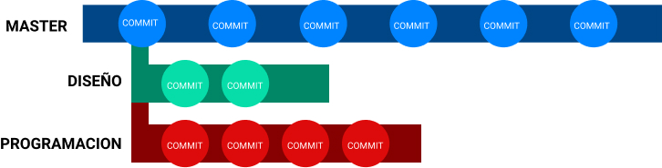
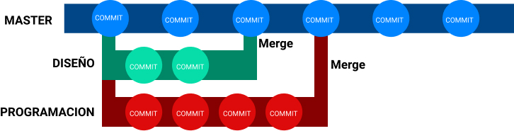
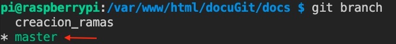
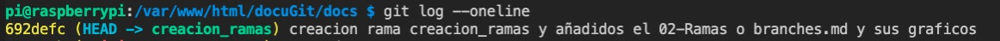

# Ramas o Branches
# Qué son las ramas
Las ramas (branches) son como lineas temporales por la cuales podemos movernos a lineas alternativas para trabajar.
# Rama principal (Main)
Por defecto Git crea una rama llamada master (main en las versiones modernas) que es en la cual trabajamos y hacemos nuestros Commits.
# Ramas ejemplo
Su uso principal es la de crear distintas ramas para cada miembro de un equipo. Por ejemplo se puede crear una para maquetación/diseño, otra para componentes, programación, etc. Y cada persona trabajar en su rama sin interferir en el trabajo de los demas. Otro uso que se le puede dar es para hacer una prueba en ese momento mientras en la rama principal, o en otras, se sigue trabajando en el proyecto. Tambien podriamos usarlo para por ejemplo si estamos creando un manual (como es este el caso) que haya una persona haciendo la pagina 1, mientras otra persona hace la 2, otra la 3, etc.

# Union de ramas (merge)
Una vez finalizado el trabajo en esa rama se fusiona (merge) con la rama principal y así todos los cambios hechos en esas ramas estan disponibles en la rama maestra.

# Creación de Rama
Para crear una rama nueva se usa el comando:
git branch nombrederama
Si hacemos un git log --oneline actualmente veremos que todos nuestros commits han sido realizado en la rama principal (master o main).

Pero si creamos una rama nueva llamada creacion_ramas git branch creacion_ramas y hacemos un git log --oneline veremos esa nueva rama:

Aunque veamos que se ha creado esa rama, hasta que no nos movamos a ella, los cambios seguirán siendo realizados en la rama master.
# Ver ramas creadas
Para ver las ramas que tenemos en nuestro proyecto debemos usar el comando:
git branch

El asterisco (y el color verde en VSC) muestra en que rama estamos actualmente (en el ejemplo la rama master), por lo que si hacemos cambios se haran en esa rama. Para poder hacer cambios en la rama creacion_ramas, primero debemos movernos a ella.
# Movernos entre ramas
Para movernos entre ramas se usa el comando checkout más el nombre de la rama a la que deseamos movernos:
git checkout creacion_ramas
Si ahora hacemos un git branch veremos que ya estamos en la rama creacion_ramas y que todos los cambios que hagamos, se haran solo en esa rama y la rama master se quedará como estaba.

Si hacemos un commit de los cambios en la rama creacion_ramas git git commit -m "creacion rama creacion_ramas y añadidos el 02-Ramas o branches.md y sus graficos" y un log git log --oneline veremos que se ha ha hecho commit en esa rama:

Pero si cambiamos a la rama master git checkout master y hacemos un git log --oneline veremos que solo muestra los commit hechos en esta rama y no estan los cambios hechos en la rama creacion_ramas:

Hay que tener en cuenta que todos los cambios hechos en la rama creacion_ramas no aparecerán en la rama master, ya que de momento no se han fusionado (merge).
# Fusionar ramas (merge)
Para que los cambios hechos en una rama se pasen a la rama se usa el comando merge.
Lo primero que debemos hacer es movernos a la rama master git checkout master y una vez en ella es cuando usaremos el comando merge:
git merge creacion_ramas
Si ahora hacemos un git log --oneline (desde master) veremos que se han pasado los cambios realizados en la rama creacion_ramas a la rama master. El último commit realizado en creacion_ramas se llamaba antes del merge y como vemos ya aparece en el log de la rama master una vez realizado el merge.
# Borrar ramas
Una vez realizado el merge de las ramas en master, puede que ya no vayamos a usar más esa rama y querramos borrarla para evitar posibles confictos en un futuro. Para borrar una rama hemos de escribir:
git branch -d nombrederama
Como ya no necesitamos la rama creacion_ramas la vamos eliminar con git branch -d creacion_ramas. Si ahora hacemos un git branchveremos que ya solo tenemos la rama master
# Cambiar nombre ramas
Si por el motivo que fuese necesitamos cambiar el nombre de una rama podemos hacerlo con:
git branch -m nombrerama nombrenuevo
Por ejemplo, en la actualidad todo lo que lleva la palabra master está mal visto por tema de esclavismo y racismo. Por ese motivo Github cambió el nombre de la rama principal llamada master por la rama main. Por lo que vamos a cambiar el nombre de esta rama master a main.
git branch -m master main
# Resolver conflictos en merge
# EN CONSTRUCCIÓN
Puede darse el caso de que estemos trabajando en la rama creacion_ramas y modifiquemos un archivo y a la vez alguien en la rama master esté tambien modificando ese mismo archivo. Al hacer un merge eso crearía un conflicto ya que el archivo es distinto en dos sitios distintos.
En este ejemplo he modificado un archivo desde la rama creacion_ramas y he hecho commit desde esa rama. He hecho un checkout a master y una vez en master he modificado ese mismo archivo e intentado hacer un merge de creacion_ramas. Debido a que los cambios en ambos ramas de ese mismo archivo son distintos Git da un error de conflicto